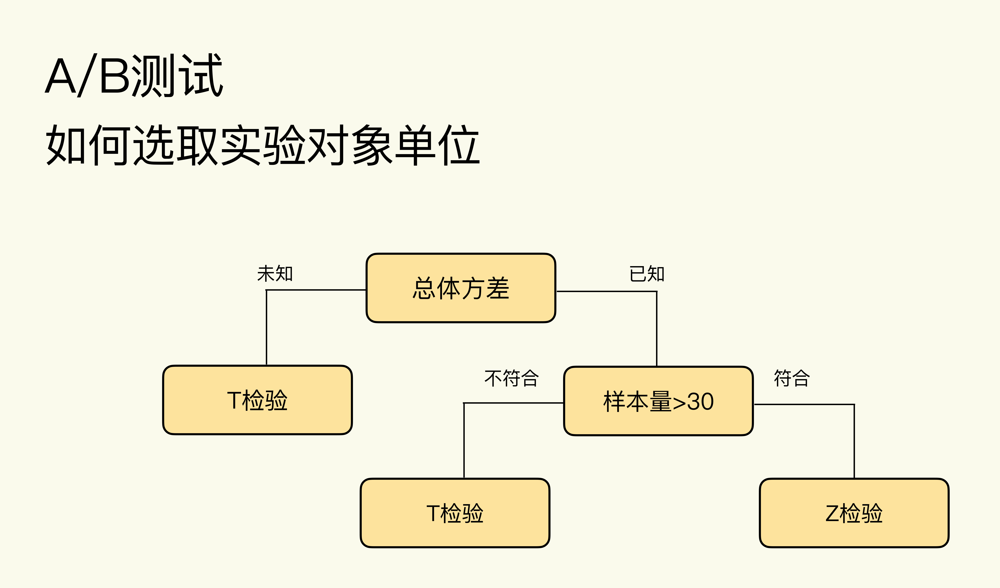
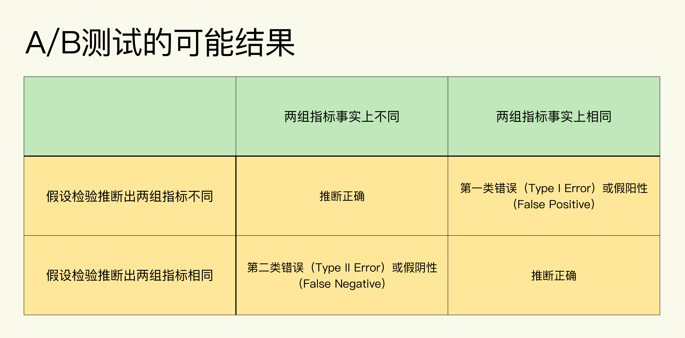
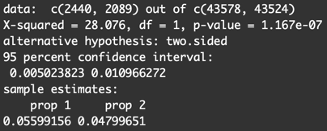
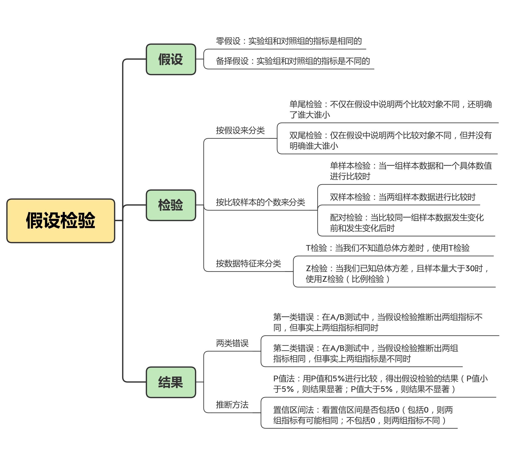

- 00 开篇词 用好A_B测试，你得这么学.md.html
- 01 统计基础（上）：系统掌握指标的统计属性.md.html
- 02 统计基础（下）：深入理解A_B测试中的假设检验.md.html
- 04 确定指标：指标这么多，到底如何来选择？.md.html
- 05 选取实验单位：什么样的实验单位是合适的？.md.html
- 06 选择实验样本量：样本量越多越好吗？.md.html
- 07 分析测试结果：你得到的测试结果真的靠谱吗？.md.html
- 08 案例串讲：从0开始，搭建一个规范的A_B测试框架.md.html
- 09 测试结果不显著，要怎么改善？.md.html
- 10 常见误区及解决方法（上）：多重检验问题和学习效应.md.html
- 11 常见误区及解决方法（下）：辛普森悖论和实验组_对照组的独立性.md.html
- 12 什么情况下不适合做A_B测试？.md.html
- 13 融会贯通：A_B测试面试必知必会（上）.md.html
- 14 举一反三：A_B测试面试必知必会（下）.md.html
- 15 用R_Shiny，教你制作一个样本量计算器.md.html
- 加餐 试验意识改变决策模式，推动业务增长.md.html
- 导读 科学、规范的A_B测试流程，是什么样的？.md.html
- 结束语 实践是检验真理的唯一标准.md.html
- 捐赠
02 统计基础（下）：深入理解A_B测试中的假设检验
你好，我是博伟。
在上节课学习A/B测试指标的统计属性时，我用一句话给你简单解释了下假设检验：选取一种合适的检验方法，去验证在A/B测试中我们提出的假设是否正确。
这句话其实很抽象，所以今天这一讲，我们就具体展开下，看看假设检验是什么，以及如何利用假设检验来做出推断。
假设检验(Hypothesis Testing)是什么？
假设检验，顾名思义，就是要检验我们提出的假设是不是正确的，在事实上能否成立。
在统计中，我们很难获取总体数据（Population）。不过，我们可以取得样本数据（Sample），然后根据样本数据的情况产生对总体数据的假设。所以，我们所说的假设检验，其实就是检测通过样本数据产生的假设在总体数据（即事实）上是否成立。
在A/B测试的语境中，假设一般是指关于实验组和对照组指标的大小的推断。
为了更加形象地帮你理解假设检验，这节课我就从一个推荐系统的案例出发，从中抽象出假设检验的基本原理和相关概念，让你在实践中学习理论，同时把理论应用到实践中去。
新闻App中的推荐系统是重要的组成部分，可以根据用户过往的浏览记录来推荐用户喜欢的内容。最近，工程团队改进了推荐系统的算法，就想通过A/B测试来验证改进的效果。
实验组中使用新算法，对照组中使用旧算法，然后通过点击率来表征算法的效果：推荐效果越好，点击率越高。那么，我们提出的假设就是：实验组（新算法）的点击率比对照组（旧算法）的点击率高。
你可能会有些疑惑，我们提出的“假设”，和假设检验中的“假设”是相同的吗？
其实不完全相同。
假设检验中的“假设”是什么？
为什么这么说呢？因为在假设检验中的“假设”是一对：零假设（Null Hypothesis）和备择假设（Alternative Hypothesis），它们是完全相反的。在A/B测试的语境下，零假设指的是实验组和对照组的指标是相同的，备择假设指的是实验组和对照组的指标是不同的。
为了更好地理解零假设和备择假设，我们可以回到推荐系统的案例中，把最开始提出的假设转化成假设检验中的零假设和备择假设：
- 零假设是，实验组和对照组的点击率是相同的。
- 备择假设是，实验组和对照组的点击率是不同的。
你可能会问，我们最开始提出的假设不是“实验组的点击率比对照组的点击率高”吗？为什么备择假设中仅仅说两组的点击率不同，却没说谁大谁小呢？
要回答这个问题，我们就得先了解单尾检验（One-tailed Test）和双尾检验（Two-tailed Test）这两个概念。
- 单尾检验又叫单边检验（One-sided Test），它不仅在假设中说明了两个比较对象不同，并且还明确了谁大谁小，比如实验组的指标比对照组的指标大。
- 双尾检验又叫双边检验（Two-sided Test），指的是仅仅在假设中说明了两个比较对象不同，但是并没有明确谁大谁小。
回到推荐系统案例中的最初假设，我们已经明确了实验组的点击率比对照组的高，那就应该选用单尾检验。但是，我们的备择假设却变成了两组的点击率不同，这是双尾检验的假设，为什么呢？
这就是理论和实践的不同之处，也是为什么我们觉得A/B测试的理论好掌握，但实践总出问题的原因。这里，我先告诉你结论，再给你说明为什么。结论是：在A/B测试的实践中，更推荐使用双尾检验。
更推荐你使用双尾检验的原因，主要有两个。
第一个原因是，双尾检验可以让数据自身在决策中发挥更大的作用。
我们在实践中使用A/B测试，就是希望能够通过数据来驱动决策。我们要尽量减少在使用数据前产生的任何主观想法来干扰数据发挥作用。所以，双尾检验这种不需要我们明确谁大谁小的检验，更能发挥数据的作用。
第二个原因是，双尾检验可以帮助我们全面考虑变化带来的正、负面结果。
在实践中，我们期望改变可以使指标朝着好的方向变化，但是万一指标实际的变化与期望的正好相反呢？这就可以体现双尾检验的优势了。双尾检验可以同时照顾到正面和负面的结果，更接近多变的现实情况。但是单尾检验只会适用于其中一种，而且通常是我们期望的正面效果。
所以正因为我们选择双尾测试，在备择假设中我们才只说了两组不同，并没有说谁大谁小。
假设检验中的“检验”都有哪些，该怎么选取？
现在，我们知道了假设检验中的“假设”包括零假设和备择假设两种，那么“检验”都包括什么呢？
其实，检验有很多种，单尾检验和双尾检验，是从“假设”的角度来分类的。除此之外，常见的“检验”还可以根据比较样本的个数进行分类，包括单样本检验（One-Sample Test）、 双样本检验（Two-Sample Test）和配对检验（Paired Test）。那么问题来了，在测试中到底该选择哪种检验方法呢？
答案是：在A/B测试中，使用双样本检验。
其中的原因其实很简单，我给你解释下它们各自的适用范围，你就知道了。
- 当两组样本数据进行比较时，就用双样本检验。比如A/B测试中实验组和对照组的比较。
- 当一组样本数据和一个具体数值进行比较时，就用单样本检验。比如，我想比较极客时间用户的日均使用时间有没有达到15分钟，这个时候，我就可以把一组样本数据（抽样所得的极客时间用户的每日使用时间）和一个具体数值（15）来进行比较。
- 当比较同一组样本数据发生变化前和发生变化后时，就用配对检验。比如，我现在随机抽取1000个极客时间的用户，给他们“全场专栏一律1折”这个优惠，然后在这1000个人中，我们会比较他们在收到优惠前一个月的日均使用时间，和收到优惠后一个月的日均使用时间。
看到这里，你可能会问，我还听说过T检验（T Test）和Z检验（Z Test），那这两个检验在A/B测试中该怎么选择呢？
选择T检验还是Z检验，主要看样本量的大小和是否知道总体方差（Population Variance）：
- 当我们不知道总体方差时，使用T检验。
- 当我们已知总体方差，且样本量大于30时，使用Z检验。
我还给你画了张图，你一看就明白了。

那么这些理论具体到A/B测试实践中，一个经验就是：均值类指标一般用T检验，概率类指标一般用Z检验（比例检验）。
为什么会有这样的经验呢？
因为上节课我讲了，样本量大的情况下均值类指标是正态分布，正态分布的总体方差的计算需要知道总体中各个数据的值，这在现实中几乎做不到，因为我们能获取的只是样本数据。所以总体方差不可知，选用T检验。
而概率类指标是二项分布，二项分布的总体方差的计算不需要知道总体中各个数据的值，可以通过样本数据求得总体方差。而且现实中A/B测试的样本量一般都远大于30，所以选用Z检验。这里的比例检验（Proportion Test)是，专指用于检验概率类指标的Z检验。
讲了这么多检验，我现在来总结一下：对于A/B测试来说，要选用双尾、双样本的比例检验（概率类指标）或T检验（均值类指标）。
再次回到我们的案例中来，由于点击率为概率类指标，所以这里选用双尾、双样本的比例检验。
如何利用假设检验做出推断？
选取了正确的假设和检验方法，接下来就要检验我们的假设是不是正确了，这在A/B测试中就是分析测试结果这一步啦。
A/B测试可能出现的结果
假设检验会推断出两种结果：
接受零假设，拒绝备择假设，也就是说实验组和对照组的指标是相同的。
接受备择假设，拒绝零假设，也就是说实验组和对照组的指标是不同的。
但是请注意，这两个结果只是假设检验根据样本数据，通过一系列统计计算推断出的结果，并不代表事实情况（总体数据情况）。如果考虑到事实情况的话，结合假设检验的推断结果会有四种可能：

可以看出，只有当假设检验推断的情况和事实完全相符时，推断才正确，否则就会出现两类错误。
第一类错误（Type I Error)：统计上的定义是拒绝了事实上是正确的零假设。在A/B测试中，零假设是两组的指标是相同的，当假设检验推断出两组指标不同，但事实上两组指标相同时，就是第一类错误。我们把两组指标不同称作阳性（Positive）。所以，第一类错误又叫假阳性（False Positive）。
发生第一类错误的概率用α表示，也被称为显著水平（Significance Level）。“显著”是指错误发生的概率大，统计上把发生率小于5%的事件称为小概率事件，代表这类事件不容易发生。因此显著水平一般也为5%。
第二类错误（Type II Error)：统计上的定义是接受了事实上是错误的零假设。在A/B测试中，当假设检验推断出两组指标相同，但事实上两组指标是不同时，就是第二类错误。我们把两组指标相同称作阴性（Negative），所以第二类错误又叫假阴性（False Negative）。发生第二类错误的概率用β表示，统计上一般定义为20%。
这两种错误的概念读起来可能比较拗口，也不太容易理解，那么我就举一个新冠病毒核酸检测的例子来给你具体解释一下。
我们在这里的零假设是：被测试者是健康的，没有携带新冠病毒。
把携带新冠病毒作为阳性，没有携带作为阴性。如果一个健康的人去检测，结果检测结果说此人携带新冠病毒，这就犯了第一类错误，拒绝了事实上正确的零假设，是假阳性。如果一个新冠肺炎患者去检测，结果检测结果说此人没有携带新冠病毒，这就犯了第二类错误，接受了事实上错误的零假设，是假阴性。
现在我们了解了假设检验推断的可能结果，那么，如何通过假设检验得到测试结果呢？
实践中常用的有两种方法：P值（P Value）法和置信区间（Confidence Interval）法。
P值法
在统计上，P值就是当零假设成立时，我们所观测到的样本数据出现的概率。在A/B测试的语境下，P值就是当对照组和实验组指标事实上是相同时，在A/B测试中用样本数据所观测到的“实验组和对照组指标不同”出现的概率。
如果我们在A/B测试中观测到“实验组和对照组指标不同”的概率（P值）很小，比如小于5%，是个小概率事件，虽然这在零假设成立时不太可能发生，但是确实被我们观测到了，所以肯定是我们的零假设出了问题。那么，这个时候就应该拒绝零假设，接受备择假设，即两组指标是不同的。
与此相反的是，当我们在A/B测试中观测到“实验组和对照组指标不同”的概率（P值）很大，比如70%，那么在零假设成立时，我们观测到这个事件还是很有可能的。所以这个时候我们接受零假设，拒绝备择假设，即两组指标是相同的。
在统计中，我们会用P值和显著水平α进行比较，又因为α一般取5%，所以就用P值和5%进行比较，就可以得出假设检验的结果了：
- 当P值小于5%时，我们拒绝零假设，接受备择假设，得出两组指标是不同的结论，又叫做结果显著。
- 当P值大于5%时，我们接受零假设，拒绝备择假设，得出两组指标是相同的结论，又叫做结果不显著。
至于P值具体的计算，我推荐你用工具来完成，比如Python或者R：
- 比例检验，可以用Python的proportions_ztest函数、R的prop.test函数。
- T检验，可以用Python的ttest_ind函数、R的t.test函数。
置信区间法
置信区间是一个范围，一般前面会跟着一个百分数，最常见的是95%的置信区间。这是什么意思呢？在统计上，对于一个随机变量来说，有95%的概率包含总体平均值（Population mean）的范围，就叫做95%的置信区间。
置信区间的统计定义其实不是特别好懂，其实你可以直接把它理解为随机变量的波动范围，95%的置信区间就是包含了整个波动范围的95%的区间。
A/B测试本质上就是要判断对照组和实验组的指标是否相等，那怎么判断呢？答案就是计算实验组和对照组指标的差值δ。因为指标是随机变量，所以它们的差值δ也会是随机变量，具有一定的波动性。
这就意味着，我们就要计算出δ的置信区间，然后看看这个置信区间是否包括0。如果包括0的话，则说明δ有可能为0，意味着两组指标有可能相同；如果不包括0，则说明两组指标不同。
至于置信区间的具体的计算，我也推荐你使用Python或者R等工具完成：
- 比例检验，可以使用Python的proportion_confint函数、R的prop.test函数。
- T检验，可以使用Python的tconfint_diff函数、R的t.test函数。
现在回到推荐系统的案例中，我会分别用P值法和置信区间法来根据A/B测试的结果进行判断。
- 实验组（新推荐算法）：样本量为43578，其中有2440个点击，点击率为5.6%。
- 对照组（旧推荐算法）：样本量为43524，其中有2089个点击，点击率为4.8%。
这时候，我用R中的比例检验函数prop.test来计算P值和置信区间。
prop.test(x = c(2440, 2089), n = c(43578, 43524), alternative = "two.sided", conf.level = 0.95)
得到了如下结果：

可以得出P值=\(1.167 e^{-7}\)， 远远小于5%且接近于0，所以我们拒绝零假设，接受备择假设，并且推断出实验组和对照组指标显著不同。
同时，我们也可以得出两组指标差值δ的95%置信区间为[0.005,0.011]，不包含0，也可以推断出两组指标显著不同。
小结
今天这节课，我们针对A/B测试的理论基础—假设检验，学习了假设、检验，以及相关的统计概念。你只要记住以下两个知识点就可以了。
第一，对于A/B测试来说，要选用双尾、双样本的比例检验（概率类指标）或T检验（均值类指标）。这决定了你在计算分析A/B测试结果时如何选取检验的参数，所以很重要。
第二，在A/B测试实践中，计算样本量大小、指标波动性和分析测试结果的时候，会用到这些统计概念。
- 计算样本量大小时，会用到： 第一类/第二类错误及其概率α和β。
- 计算指标波动性时，会用到：方差和置信区间。
- 分析A/B测试结果时，会用到：各类检验、置信区间、P值。
本节课中的关于假设检验的概念和知识点比较琐碎，为了方便你日后理解记忆，我也给你准备了下面的导图：

到这里我们的统计篇就告一段落了，现在你应该已经掌握了A/B测试所需的基本统计知识啦。其实，前两节的内容比较偏理论，会不太好理解。不过，理论知识的学习，如果只是填鸭式地讲，效果可能并不好。那该怎么掌握这些理论知识呢？在我这些年做A/B测试的实践中发现，要想真正把理论知识理解透，化为己用，还是需要自己多思考，多实践。等你有了一些实战后，自然就能自己体悟到理论学习的好处了。而且这时候再回过头来看理论，就会非常容易看懂。
所以，在今天的内容中，如果有哪些地方你还不能理解，那也没关系，不要给自己设置心理障碍，可以先放一放。之后的课程中，我都会运用今天讲到的理论，去解决在A/B测试中遇到的问题。你可以在学习的过程中不断回顾这些理论，或者发挥主观能动性，多查阅一些资料。等你学完整个课程，再回头看这两节理论知识，一定会发现理论原来如此简单。
那么接下来，我们就进入“基础篇”模块，去详细学习A/B测试的主要流程吧！
思考题
这节课涉及的统计概念都是虽然经常听到，但是难理解的，你们在学习统计中有没有对这些概念的理解有独特的心得？可以拿出来分享给大家。
欢迎在留言区写下你的思考和想法，我们可以一起交流讨论。如果你觉得有所收获，欢迎你把课程分享给你的同事或朋友，一起共同进步！
© 2019 - 2023 Liangliang Lee. Powered by gin and hexo-theme-book.